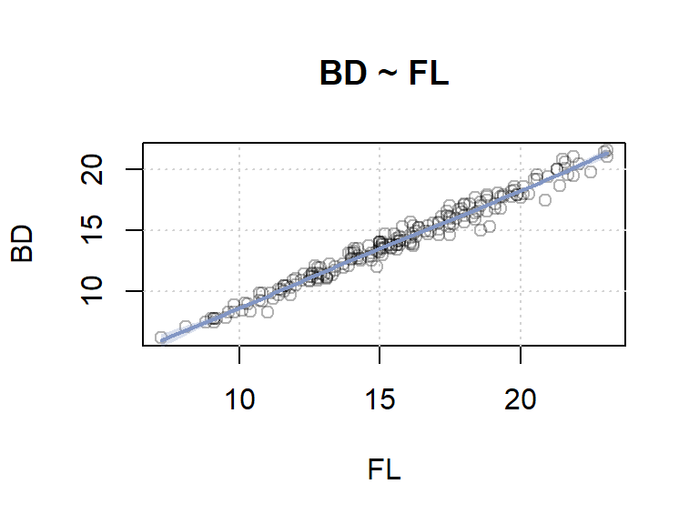
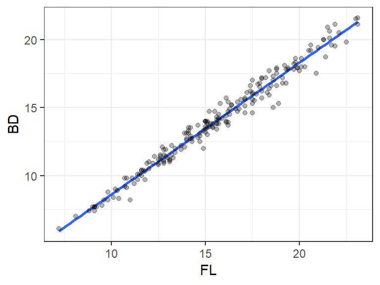
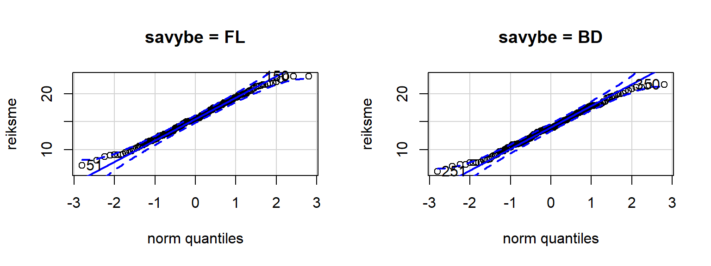
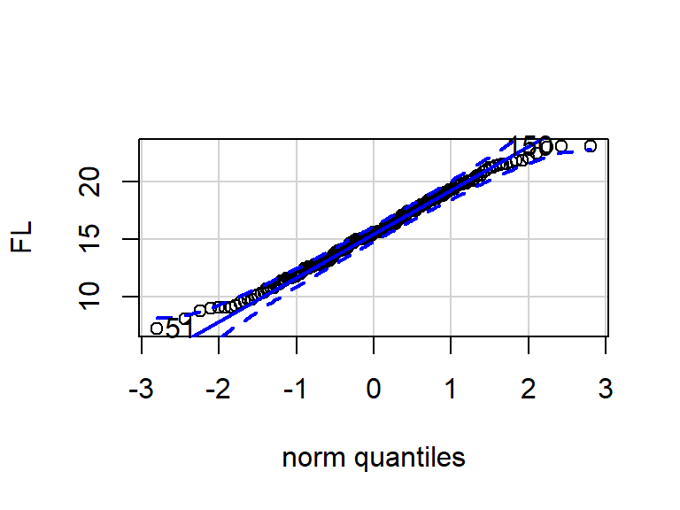
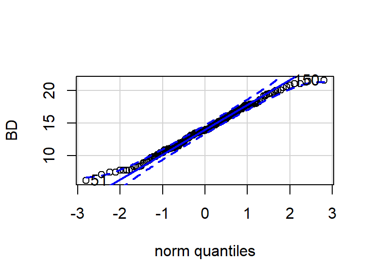
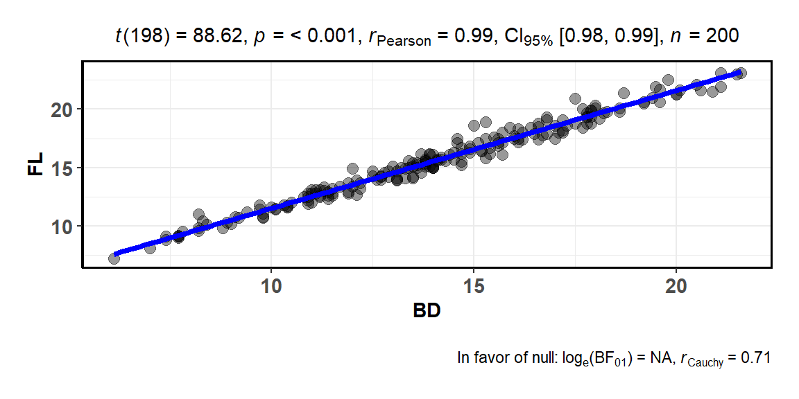
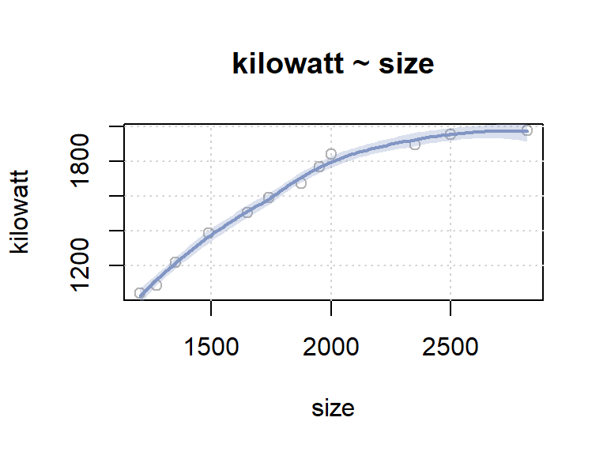
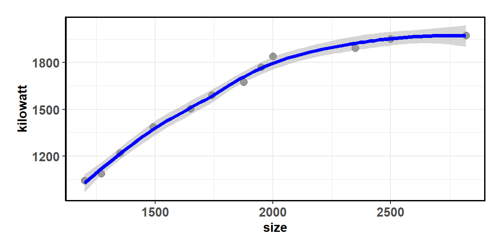

20. Ryšys tarp kintamųjų
Šio skyriaus medžiaga vis dar rengiama arba neatnaujinta šių metų kursui, todėl kol kas jos nenagrinėkite.
Šiame skyriuje bus mokoma atlikti analizę, kuria tiriamas ryšys (sąsaja) tarp kintamųjų. Tokia analizė gali padėti atsakyti į klausimą, ar yra ryšys tarp į terpę įdėtos gliukozės kiekio ir ląstelių dydžio, tarp padarytų pritūpimų skaičiaus ir pulso dažnumo, tarp ląstelių rūšies ir dydžio (didelės/mažos), tarp valandų skaičiaus besirengiant atsiskaitymui ir pažymio. T. y., ar pasikeitus vieno kintamojo reikšmėms, tikėtina, kad analogiška (arba priešinga) kryptimi pasikeis ir kito kintamojo reikšmės.
Užsiėmimo tikslas – išmokti įvertinti sąsajos tarp kintamųjų reikšmių stiprumą.
20.1 Bendrieji principai
20.1.1 Sąsaja neparodo priežastingumo
Atliekant sąsajos tarp kintamųjų analizę, svarbu prisiminti, kad:
Bei kad:
Tai, kad dviejų kintamųjų reikšmės yra susijusios ar koreliuoja, dar nereiškia, kad vienas kintamasis yra kito kintamojo priežastis. Norint pagrįsti priežastingumą, be ryšio stiprumo būtinai reikia pagrįsti dar bent 2 dalykus:
- abu tiriamieji reiškiniai yra nutolę laike, t. y., vyksta ne tuo pačiu metu,
- tas reiškinys, kuris laikomas priežastini, visada įvyksta anksčiau nei tas, kuris laikomas pasėkime.
Deja, nei koreliacinė, nei kitokia požymių nepriklausomumo analizė savaime šių dalykų neparodo. Analizės rezultatai gali atskleisti tik tai, kad kintant vieno požymio reikšmėms, tikėtina, kis ir kito požymio reikšmės. Norint daryti priežastinio tipo išvadas būtinas tikslingai suplanuotas eksperimentas.
Be to dažna situacija, kad abudu mūsų tiriamieji kintamieji yra trečiojo, tyrime netiriamo kintamojo pasekmė.
20.1.2 Statistinis sąsajos reikšmingumas
Norint patikrinti, ar ryšys tarp kintamųjų yra statistiškai reikšmingas, tikrinama statistinė hipotezė, kuri bendruoju atveju, gali būti formuluojama taip:
- \(H_0\): dviejų požymių reikšmės nėra susijusios (sąsajos stiprumas lygus nuliui);
- \(H_1\): dviejų požymių reikšmės yra susijusios (sąsajos stiprumas nelygus nuliui).
„Požymių reikšmės susijusios“ reiškia, kad žinodami vieno požymio reikšmes (ir jų kitimą) gauname papildomos informacijos ir apie kito požymio reikšmes (ir jų kitimą). Pvz., kad padidėjus vieno kintamojo reikšmėms (pvz., atliktų pritūpimų skaičiui), tikėtina, padidės ir kito kintamojo (pvz., pulso dažnis) reikšmės.
Jei reikšmingumo lygmuo \(\alpha =\) 0,05, tai, kai:
- \(p <\) 0,05, teigiame, kad požymiai susiję (priimame \(H_1\), sąryšis statistiškai reikšmingas);
- \(p \ge\) 0,05, teigti, kad požymiai susiję negalime (neatmetame \(H_0\), sąryšis statistiškai nereikšmingas).
Koreliacinės analizės, kuri yra skirta įvertinti tiesinį (arba monotoninį) ryšį tarp skaitinių (arba ranginių) kintamųjų, atveju statistines hipotezes galima formuluoti taip:
- \(H_0\): koreliacijos koeficientas lygus nuliui, koreliacijos nėra;
- \(H_1\): koreliacijos koeficientas nelygus nuliui, kintamieji yra koreliuoti (dvipusė alternatyva).
Galimos ir vienpusės alternatyvos: koreliacijos koeficientas mažesnis už nulį, kintamieji koreliuoti neigiamai (vienpusė alternatyva); koreliacijos koeficientas didesnis už nulį, kintamieji koreliuoti teigiamai (vienpusė alternatyva). Nors yra 3 alternatyvų variantai, jei neturime pagrindo rinktis kitaip, įprastai renkamės dvipusę.
20.1.3 Sąsajos stiprumas
Visiems šiame skyriuje minimiems ryšio matams (koreliacijos koeficientams ir kitiems) galioja tokios taisyklės:
- kuo absoliučioji koeficiento vertė didesnė, tuo priklausomybė tarp požymių reikšmių yra stipresnė;
- įprastai maksimali absoliučioji koeficientų vertė būna 1 (t. y., \(|1|\) arba \(|-1|\), čia \(|...|\) – modulio ženklas);
- kuo ši vertė arčiau nulio, tuo matuojamo tipo sąsaja silpnesnė.
20.2 Koreliacinė analizė
Koreliacinė analizė yra vienas iš analizės tipų, skirtų įvertinti statistinę sąsają (ryšį) tarp dviejų kintamųjų. Tinka, kai statistinis ryšys tarp kintamųjų yra monotoninis (negriežtai sakant, arba nuolat didėjantis ir protarpiais nekintantis, arba nuolat mažėjantis ir protarpiais nekintantis) ir netinka, kai ryšys yra kitokio pobūdžio (pvz., iš pradžių mažėja, o po to didėja, pvz., pav. 20.1 trečia eilutė). Iš to išplaukia, kad kintamieji turi būti skaitiniai arba ranginiai, bet turėti pakankamai daug skirtingų reikšmių. Kitu atveju naudojama kategorinių kintamųjų ryšiui tirti skirta analizė.
Koreliacijos koeficientas parodo tiesinio, jei koreliacija tiesinė, arba ranginio, jei koreliacija ranginė, sąryšio tarp 2 kintamųjų stiprumą: t. y., ar tikėtina, kad padidėjus vieno kintamojo reikšmėms, padidės (arba sumažės) ir kito kintamojo reikšmės (ką tai reiškia ir ko nereiškia, vaizduojama pirmoje ir antroje pav. 20.1 eilutėse). Įprastai, jei neminima, apie kurį koreliacijos koeficientą kalbama, omenyje turimas Pearson (Pirsono) tiesinės koreliacijos koeficientas. Visgi, aprašant savo tyrimo rezultatus, rekomenduoju vengti dviprasmybės ir aiškiai nurodyti, kurį koreliacijos koeficientą naudojate.
Keletas teiginių apie koreliacinę analizę:
- Koreliacijos koeficientas nepriklauso nuo kintamųjų matavimo vienetų.
- Kinta nuo -1 iki +1;
- Ypatingieji taškai: -1, 0, +1;
- Koeficiento ženklas:
- teigiamas koeficientas rodo tiesioginę priklausomybę (padidėjus X reikšmėms tikėtina, kad padidėja ir Y reikšmės);
- neigiamas – atvirkštinę (padidėjus X reikšmėms tikėtina, kad Y reikšmės sumažėja).
- Koreliacijos stiprumą rodo absoliučioji koeficiento reikšmė:
- konkreti interpretacija priklauso nuo tyrimo srities;
- preliminarus vertinimas pateiktas 20.1 lentelėje.
- Jei dydžiai koreliuoja, vadinasi – jie yra priklausomi, bet jei nekoreliuoja, tada gali būti visaip: ir priklausomi (pvz., netiesiškai), ir nepriklausomi.
- Koreliacija laikoma statistiškai reikšminga, kai \(p\) reikšmė yra maža (pvz., kai \(p <\) 0,05, jei \(\alpha =\) 0,05). Iš principo toks rezultatas rodo, kad koreliacijos koeficientas (žymėkime \(\varrho\)) statistiškai reikšmingai skiriasi nuo 0 \((\varrho \ne 0)\).
- Generalinės aibės tiesinės koreliacijos koeficientas įprastai žymimas \(\varrho\), o jo įvertis, apskaičiuotas iš imties duomenų, žymimas \(r.\) Koeficientas \(r\) yra atsitiktinis dydis (dėl to, kad imtis sudaryta atsitiktinai), tad jo reikšmė gali būti didelė, nors tikrasis \(\varrho = 0\). Dėl to ir tikriname statistinį reikšmingumą (t. y., tikriname, ar iš turimų duomenų galime pagrįstai teigti, kad tikrasis koeficientas nelygus nuliui).
![Grafiškai atvaizduoti dviejų kintamųjų priklausomybės variantai (sklaidos diagramos) ir **Pearson** (Pirsono) **koreliacijos koeficientas** (skaičius virš grafikų).
Kiekviena eilutė vaizduoja tam tikrus koreliacinės analizės aspektus.
**(1)** Pirmoji eilutė -- ką Pearson koreliacijos koeficientas **parodo** tiesinės sąsajos stiprumą, t. y., kuo sąsaja stipresnė, tuo glaudžiau taškai išsidėsto į vieną tiesę.
**(2)** Antroji eilutė -- ko **neparodo**, tai geriausiai taškus atitinkančios regresijos tiesės pokrypio kampo.
Apskritai, šios eilutės vidutiniam grafikui (horizontali linija) koreliacijos koeficientas negali būti apibrėžtas, nes y ašies reikšmių pokytis lygus nuliui.
**(3)** Trečioji eilutė -- kada **netinka**: kai statistinė priklausomybė tarp kintamųjų nėra tiesinė, didėjant X reikšmėms, Y ir didėja, ir mažėja.
Tokiais atvejais priklausomybė yra, bet koreliacijos koeficientas jos neparodys.
Iliustracijos šaltinis [<i class="fa fa-external-link-alt" aria-hidden="true"></i>](https://commons.wikimedia.org/wiki/File:Correlation_examples2.svg#/media/File:Correlation_examples2.svg), autorius -- DenisBoigelot, licencija -- [Creative Commons, CC0](http://creativecommons.org/publicdomain/zero/1.0/deed.en).](fig/pic/11/11-Correlation-examples2.svg)
Pav. 20.1: Grafiškai atvaizduoti dviejų kintamųjų priklausomybės variantai (sklaidos diagramos) ir Pearson (Pirsono) koreliacijos koeficientas (skaičius virš grafikų). Kiekviena eilutė vaizduoja tam tikrus koreliacinės analizės aspektus. (1) Pirmoji eilutė – ką Pearson koreliacijos koeficientas parodo tiesinės sąsajos stiprumą, t. y., kuo sąsaja stipresnė, tuo glaudžiau taškai išsidėsto į vieną tiesę. (2) Antroji eilutė – ko neparodo, tai geriausiai taškus atitinkančios regresijos tiesės pokrypio kampo. Apskritai, šios eilutės vidutiniam grafikui (horizontali linija) koreliacijos koeficientas negali būti apibrėžtas, nes y ašies reikšmių pokytis lygus nuliui. (3) Trečioji eilutė – kada netinka: kai statistinė priklausomybė tarp kintamųjų nėra tiesinė, didėjant X reikšmėms, Y ir didėja, ir mažėja. Tokiais atvejais priklausomybė yra, bet koreliacijos koeficientas jos neparodys. Iliustracijos šaltinis , autorius – DenisBoigelot, licencija – Creative Commons, CC0.
{kind=link}
| Preliminarus koreliacijos vertinimas | Koreliacijos koeficiento reikšmės |
|---|---|
| koreliacijos nėra | 0 |
| labai silpna | [-0,2; 0) arba (0; 0,2] |
| silpna | [-0,4; -0,2) arba (0,2; 0,4] |
| vidutinė | [-0,7; -0,4) arba (0,4; 0,7] |
| stipri | [-0,9; -0,7) arba (0,7; 0,9] |
| labai stipri | [-1,0; -0,9) arba (0,9; 1,0] |
| tiesinis sąryšis | -1 arba 1 |
20.2.1 Kurį koreliacijos variantą pasirinkti?
Yra keli praktikoje dažnai naudojami koreliacinės analizės variantai:
- Tiesinė koreliacija (Pearson (Pirsono) koreliacijos koeficientas \(\varrho\)) – tinka, kai ryšys tarp kintamųjų yra tiesinis, o duomenys yra skaitiniai ir be išskirčių. Įprastai norime patikrinti ir statistinį reikšmingumą (t. y., kaip labai tikėtina, kad sąsaja yra atsitinktinė), o tam papildomai reikia, kad duomenys būtų normalieji ir imties dydis pakankamai didelis, pvz., 20 ar didesnis (Čekanavičius ir Murauskas 2008, p.33):
- angl. Pearson product-moment correlation coefficient.
- Ranginė koreliacija (Spearman (Spirmeno) koeficientas \(\varrho_s\) arba Kendall (Kendalo) koeficientas \(\tau\)) – įprastai naudojamas, kai netenkinamos kai kurios tiesinei koreliacijai keliamos prielaidos. Tinka, kai ryšys yra nebūtinai tiesinis, bet monotoninis, duomenys nebūtinai normalieji arba ranginiai, yra išskirčių bei kai stebėjimų skaičius mažas. Ranginių koreliacijos koeficientų skaičiavimo prielaida yra ta, kad bendras analizuojamų požymių skirstinys yra tolydusis, t. y., yra mažai pasikartojančių reikšmių (Venclovienė 2010, p.175).
- Spearman (Spirmeno) ranginės koreliacijos koeficientas (angl. Spearman rank-order) yra populiaresnis (Field ir kt. 2012), bet jautresnis duomenų neatitikimui ir klaidoms;
- Kendall (Kendalo) koreliacijos koeficientas (angl. Kendall’s tau) – lengviau interpretuojamas nei Spirmeno (Venclovienė 2010, p.177), tiksliau įvertina tikrąją koreliaciją generalinėje aibėje, tad geriau generalizuoja (Field ir kt. 2012, p.225), labiau tinka mažoms imtims, kuriose yra daug pasikartojančių reikšmių (Field ir kt. 2012, p.225);
- Absoliučiąja reikšme Kendall koreliacijos koeficientas yra šiek tiek mažesnis už Spearman, bet padarytos išvados yra vienodai reikšmingos (Čekanavičius ir Murauskas 2008, p.39), jei koeficientai naudojami tinkamai.
Schemoje 20.2 pateikiamas siūlymas, kaip išsirinkti tinkamą koreliacinės analizės variantą. Jei duomenys tenkina reikiamas prielaidas, įprastai pasirenkamas Pirsono koreliacijos koeficientas.
Schema yra supaprastinta ir tik rekomendacinio pobūdžio. Jos tikslas – būti „atspirties tašku“ renkantis analizės metodą. Konkrečiu atveju gali būti išlygų, papildomų sąlygų arba pasirinkimo variantų, kurie schemoje nepažymėti.
Pav. 20.2: Schema, rekomenduojanti, kurį (Pearson, Spearman ar Kendall) koreliacijos koeficientą pasirinkti. Spalvinio žymėjimo reikšmės pateiktos skyriuje „14.4 Schemos metodams pasirinkti“.
20.2.2 Prielaidų ir kitų reikalavimų tikrinimas
- Tiesiškumo prielaida. Ar tenkinama tiesiškumo prielaida, įvertinama iš sklaidos diagramos.
- Išskirtys. Aš yra išskirčių taip pat vertiname pagal sklaidos diagramą.
- Normaliojo pasiskirstymo prielaida. Duomenys turėtų tenkinti dvimačio normaliojo pasiskirstymo reikalavimą. Dažnai, jei kiekvienas tiriamasis kintamasis yra normalusis, tai ir dvimatis jų pasiskirstymas būna normalusis. Apie normalumo tikrinimą kiekvienam kintamajam atskirai plačiau skaitykite skyriuje „16 Normalumo tikrinimas“.
Reikiama duomenų struktūra – du skaitiniai kintamieji:
head(my_data)
## x y
## 1 185.4 1.8944
## 2 197.0 1.9506
## 3 168.2 1.9218
## 4 180.3 1.9223
## 5 189.6 1.8773
## 6 179.5 2.006620.2.3 Rezultatų aprašymas: koreliacinė analizė
Aprašant rezultatus nurodomas tikslus koreliacijos koeficiento pavadinimas, jo didumas, bei statistinį koreliacijos reikšmingumą apibūdinanti \(p\) reikšmė, jei reikia, nurodoma, ar vienpusė ar dvipusė alternatyva. Taip pat pateikiama sklaidos diagrama. Keli aprašymo pavyzdžiai pateikti skyriuje 20.2.5.
20.2.4 Simuliacija: Pirsono koreliacijos koeficientas
Tai papildoma užduotis, todėl dabar ją praleiskite.
Siekdami susipažinti su koreliacijos koeficientu ir jo grafine interpretacija, išbandysite interaktyvią simuliaciją „Koreliacijos koeficiento interpretacija “. Nuorodą atsidarykite atskirame lange ir atlikite 20.1 užduotį.
Užduotis 20.1 Atskirame lange atsidarykite pareiktą nuorodą ir atsakykite į šiuos klausimus (nuoroda: http://rpsychologist.com/d3/correlation/):
- Kaip sklaidos diagramos taškų „debesėlio“ forma priklauso nuo pasirinkto koreliacijos koeficiento?
- Pasirinkite imties dydį („sample size“) lygų 100;
- Koreliacijos koeficientą keiskite nuo -1 iki +1 kas 0,25 (slankiklis „Slide me“);
- Naudodami tą patį koreliacijos koeficientą sugeneruokite 3-5 naujas imtis (tai atliksite pakartotinai paspaudę mygtuką „New sample“) ir pažiūrėkite, ką visos jos turi bendra.
- Užrašuose nusibraižykite, kaip atrodo sklaidos diagramos taškų „debesėlis“ naudojant kiekvieną išbandytą koreliacijos koeficientą.
- Visą simuliaciją pakartokite su kitokio dydžio imtimi. Kas pasikeičia, jei imties dydis yra:
- 20?
- 200?
- Kokią įtaką Pirsono koreliacijos koeficientui daro išskirtys?
- Imties dydis lygus 100, koreliacijos koeficientas – -0,8. Pele pasirinkite vieną tašką sklaidos diagramoje (užveskite žymeklį ir paspauskite dešinį pelės klavišą) ir neatleisdami klavišo nutempkite jį į viršutinį dešinį kampą. Įvertinkite, kaip pasikeitė koreliacijos koeficientas.
- Koreliacijos koeficientas – 0. Vėl pasirinkite vieną tašką ir nutempkite į tą patį kampą. Vėl įvertinkite, kaip pakito koreliacijos koeficientas.
- Simuliaciją pakartokite naudodami kitokio dydžio imtis (20, 200 ir pan.).
- Kokį įspūdį susidarėte: ar Pirsono koreliacijos koeficiento įvertis atsparus išskirtims?
20.2.5 Pavyzdžiai
Pradžioje bus pateikiamas programos kodas ir „R“ rezultatai, po jų – rezultatų aprašymo pavyzdys.
Pavyzdys 1
Panagrinėkime pavyzdį apie krabus.
library(tidyverse)
library(car)
## Loading required package: carData
##
## Attaching package: 'car'
## The following object is masked from 'package:DescTools':
##
## Recode
## The following object is masked from 'package:dplyr':
##
## recode
## The following object is masked from 'package:purrr':
##
## some
library(RcmdrMisc)
## Loading required package: sandwich
library(DescTools)
options(scipen = 8)
library(qqplotr)
library(ggstatsplot)data(crabs, package = "MASS")glimpse(crabs)
## Observations: 200
## Variables: 8
## $ sp <fct> B, B, B, B, B, B, B, B, B, B, B, B, B, B, B, B, B, B, B,...
## $ sex <fct> M, M, M, M, M, M, M, M, M, M, M, M, M, M, M, M, M, M, M,...
## $ index <int> 1, 2, 3, 4, 5, 6, 7, 8, 9, 10, 11, 12, 13, 14, 15, 16, 1...
## $ FL <dbl> 8.1, 8.8, 9.2, 9.6, 9.8, 10.8, 11.1, 11.6, 11.8, 11.8, 1...
## $ RW <dbl> 6.7, 7.7, 7.8, 7.9, 8.0, 9.0, 9.9, 9.1, 9.6, 10.5, 10.8,...
## $ CL <dbl> 16.1, 18.1, 19.0, 20.1, 20.3, 23.0, 23.8, 24.5, 24.2, 25...
## $ CW <dbl> 19.0, 20.8, 22.4, 23.1, 23.0, 26.5, 27.1, 28.4, 27.8, 29...
## $ BD <dbl> 7.0, 7.4, 7.7, 8.2, 8.2, 9.8, 9.8, 10.4, 9.7, 10.3, 10.9...Mus domina kintamieji FL (frontal lobe size, mm) – priekinės skilties dydis milimetrais ir BD (body depth, mm) – kūno storis milimetrais. Ištirkime sąsają tarp šių požymių.
Imtis didelė – 200 tiriamųjų. Toliau pažiūrėkime, ar ryšys tiesinis? Ar yra išskirčių?
Desc(BD ~ FL, data = crabs)
## -------------------------------------------------------------------------
## BD ~ FL
##
## Summary:
## n pairs: 200, valid: 200 (100.0%), missings: 0 (0.0%)
##
##
## Pearson corr. : 0.988
## Spearman corr.: 0.987
## Kendall corr. : 0.912
Grafiką galime nusibraižyti ir ggplot2 sistema.
ggplot(crabs, aes(FL, BD)) +
geom_smooth(method = lm, se = FALSE) +
geom_point(alpha = 0.3)
Panašu, kad ryšys yra tiesinis, duomenys – be aiškių išskirčių.
Ar požymiai normalieji? Prielaidas tikrinti galime abiems kintamiesiems iš karto, jei duomenis pasiversime į ilgąjį formatą:
crabs_grafikams <-
crabs %>%
gather(key = "savybe", value = "reiksme", FL, BD, factor_key = TRUE)RcmdrMisc::normalityTest(reiksme ~ savybe, data = crabs_grafikams)
##
## --------
## savybe = FL
##
## Shapiro-Wilk normality test
##
## data: reiksme
## W = 0.99037, p-value = 0.2023
##
## --------
## savybe = BD
##
## Shapiro-Wilk normality test
##
## data: reiksme
## W = 0.99027, p-value = 0.1957
##
## --------
##
## p-values adjusted by the Holm method:
## unadjusted adjusted
## FL 0.20228 0.39131
## BD 0.19565 0.39131Arba kiekvienam kintamajam atskirai.
with(crabs, shapiro.test(FL))
##
## Shapiro-Wilk normality test
##
## data: FL
## W = 0.99037, p-value = 0.2023with(crabs, shapiro.test(BD))
##
## Shapiro-Wilk normality test
##
## data: BD
## W = 0.99027, p-value = 0.1957Imtis didelė, o Šapiro-Vilko (SW) kriterijaus \(p\) reikšmė didesnė už 0,05 abiem atvejais, tad normalumo prielaida tenkinama. Jei imtis būtų labai maža, šiais (statistiškai nereikšmingais) rezultatais galėtume abejoti.
QQ diagramos (kelios iš karto):
car::qqPlot(reiksme ~ savybe, data = crabs_grafikams) QQ diagramos po vieną:
with(crabs, car::qqPlot(FL))
## [1] 51 150with(crabs, car::qqPlot(BD))
## [1] 51 150Diagramas galime nubraižyti ir ggplot2 būdu:
# Paketo `qqplotr` dokumentacija: https://aloy.github.io/qqplotr/
ggplot(crabs, aes(sample = FL)) +
stat_qq_band() +
stat_qq_line() +
stat_qq_point() +
labs(x = "Teoriniai kvantiliai", y = "Duomenų kvantiliai")ggplot(crabs, aes(sample = BD)) +
stat_qq_band() +
stat_qq_line() +
stat_qq_point() +
labs(x = "Teoriniai kvantiliai", y = "Duomenų kvantiliai")QQ diagrama aiškaus nukrypimo nuo normalumo irgi nerodo. Pasirenkame, kad tinkamas Pearson koreliacijos koeficientas.
with(crabs, cor.test(BD, FL, method = "pearson"))
##
## Pearson's product-moment correlation
##
## data: BD and FL
## t = 88.618, df = 198, p-value < 2.2e-16
## alternative hypothesis: true correlation is not equal to 0
## 95 percent confidence interval:
## 0.9836734 0.9906280
## sample estimates:
## cor
## 0.9876272Šio tipo analizę taip pat atlieka ir ggstatsplot funkcija ggscatterstats() nurodant, jog reikia parametrinio kriterijaus (type = "parametric"). Virš grafiko – apibendrinti rezultatai.
ggstatsplot::ggscatterstats(
x = BD,
y = FL,
data = crabs,
type = "parametric",
marginal = FALSE
)
Aprašymo pavyzdys. „Atliktas 200 krabų tyrimas, kuriame lyginta gyvūnų priekinės skilties dydžio (FL) ir kūno storio (BD) priklausomybė. Pastebėta stipri teigiama koreliacija (\(r\) = 0,99, 95% PI 0,98–0,99, \(p\) < 0,001). Sąryšis tarp kintamųjų atvaizduotas pav. ___ (nurodomas paveikslo numeris).“
arba
„…tarp krabų (\(n\) = 200) priekinės skilties dydžio ir kūno storio nustatyta stipri koreliacija (\(r\) = 0,99, 95% PI 0,98–0,99, \(p\) < 0,001).“
Taip pat turi būti nurodomi trumpinių paaiškinimai: n – imties dydis, \(r\) – Pirsono (Pearson) koreliacijos koeficientas, PI – pasikliautinasis intervalas.
Svarbu! Moksliniuose darbuose nerašykite „koreliacijos nėra“, nes tai nekorektiškas teiginys. Įprastai rašoma „koreliacija buvo statistiškai nereikšminga“ ar „statistiškai reikšmingos koreliacijos nerasta“.
Pavyzdys 2
Toliau ištirkime, kaip namų dydis (kvadratinėmis pėdomis, angliški matavimo vienetai) ir jų suvartojamas elektros kiekis (kilovatvalandės per mėnesį) koreliuoja.
library(tidyverse)
library(DescTools)
library(ggstatsplot)data(Energy, package = "BSDA")glimpse(Energy)
## Observations: 12
## Variables: 2
## $ size <int> 2820, 2500, 2350, 2000, 1950, 1875, 1740, 1650, 1490,...
## $ kilowatt <int> 1975, 1952, 1894, 1841, 1769, 1674, 1590, 1505, 1386,...Tik 12 stebėjimų. Duomenis nusibraižome:
Desc(kilowatt ~ size, data = Energy)
## -------------------------------------------------------------------------
## kilowatt ~ size
##
## Summary:
## n pairs: 12, valid: 12 (100.0%), missings: 0 (0.0%)
##
##
## Pearson corr. : 0.940
## Spearman corr.: 1.000
## Kendall corr. : 1.000 Panašu, kad ryšys nėra tiesinis, bet monotoninis. Pažiūrėkime, kaip duomenys atrodo ties jais nusibraižius tiesę.
ggplot(Energy, aes(size, kilowatt)) +
geom_smooth(method = lm, se = FALSE) +
geom_point()Panašu, kad ryšys netiesinis, bet monotoninis. Tiks ranginė koreliacija.
with(Energy, cor.test(size, kilowatt, method = "kendall"))
##
## Kendall's rank correlation tau
##
## data: size and kilowatt
## T = 66, p-value = 0.000000004175
## alternative hypothesis: true tau is not equal to 0
## sample estimates:
## tau
## 1Ranginę Spearman koreliacinę analizę gali atlikti ggstatsplot funkcija ggscatterstats() nurodant, jog reikia neparametrinio kriterijaus (type = "nonparametric"). Deja, šiuo būdu Kendall koreliacinės analizės atlikti negalime:
ggstatsplot::ggscatterstats(
x = size,
y = kilowatt,
data = Energy,
type = "nonparametric",
method = "auto", # "lm"
marginal = FALSE)
## `geom_smooth()` using method = 'loess' and formula 'y ~ x'
## `geom_smooth()` using method = 'loess' and formula 'y ~ x'
## `geom_smooth()` using method = 'loess' and formula 'y ~ x'
with(Energy, cor.test(size, kilowatt, method = "spearman"))
##
## Spearman's rank correlation rho
##
## data: size and kilowatt
## S = 0, p-value < 2.2e-16
## alternative hypothesis: true rho is not equal to 0
## sample estimates:
## rho
## 1Aprašymo pavyzdys. „Tiriant sąsają tarp namų dydžio (kvadratinės pėdos) ir suvartojamo elektros kiekio (kilovatvalandės per mėnesį) atlikta ranginė Kendall koreliacinė analizė, kuri atskleidė labai stiprų tiesioginį ryšį tarp šių kintamųjų (\(\tau\) = 1,00, \(p\) < 0,001). Imties dydis – 12. Priklausomybė atvaizduota sklaidos diagrama (skliaustuose nurodomas paveikslo numeris).“
Taip pat turi būti nurodomi trumpinių paaiškinimai: \(\tau\) – Kendall koreliacijos koeficientas.
arba
„Tarp namų dydžio ir suvartoto elektros kiekio ryšys buvo netiesinis, tačiau aptikta stipri ranginė koreliacija (Kendall \(\tau\) = 1,00, \(p\) < 0,001). Imties dydis – 12 stebėjimų.“
Jei atlikome Spearnam analizę:
„Tarp namų dydžio ir suvartoto elektros kiekio ryšys buvo netiesinis, tačiau aptikta stipri ranginė koreliacija (Spearman \(\varrho_s\) = 1,00, \(p\) < 0,001). Imties dydis – 12 stebėjimų.“
20.2.6 Rekomenduojami informacijos šaltiniai
Šiame konspekte pateikti tik esminiai koreliacinės analizės bruožai. Išsamiau teorija išdėstyta šiuose vadovėliuose:
20.3 Sąsaja tarp kategorinių kintamųjų reikšmių
20.3.1 Požymių nepriklausomumo tikrinimas
Sąsaja ir nepriklausomumas – tai viena kitai atvirkštinės sąvokos. Iš principo, šiame poskyryje mokysimės tirti, ar sąsaja tarp kategorinių kintamųjų yra reikšminga.
Kategorinių duomenų analizės principas: pirma susidarome dažnių lentelę ir toliau kitomis funkcijomis šią lentelę analizuojame.
Pavyzdyje tirsime duomenų lentelės mtcars (32 atsitiktinai pasirinkti automobiliai) kintamuosius cyl(cilindrų skaičius) ir am (pavarų dėžė: 0 – automatinė, 1 – rankinė).
data(mtcars)glimpse(mtcars)
## Observations: 32
## Variables: 11
## $ mpg <dbl> 21.0, 21.0, 22.8, 21.4, 18.7, 18.1, 14.3, 24.4, 22.8, 19....
## $ cyl <dbl> 6, 6, 4, 6, 8, 6, 8, 4, 4, 6, 6, 8, 8, 8, 8, 8, 8, 4, 4, ...
## $ disp <dbl> 160.0, 160.0, 108.0, 258.0, 360.0, 225.0, 360.0, 146.7, 1...
## $ hp <dbl> 110, 110, 93, 110, 175, 105, 245, 62, 95, 123, 123, 180, ...
## $ drat <dbl> 3.90, 3.90, 3.85, 3.08, 3.15, 2.76, 3.21, 3.69, 3.92, 3.9...
## $ wt <dbl> 2.620, 2.875, 2.320, 3.215, 3.440, 3.460, 3.570, 3.190, 3...
## $ qsec <dbl> 16.46, 17.02, 18.61, 19.44, 17.02, 20.22, 15.84, 20.00, 2...
## $ vs <dbl> 0, 0, 1, 1, 0, 1, 0, 1, 1, 1, 1, 0, 0, 0, 0, 0, 0, 1, 1, ...
## $ am <dbl> 1, 1, 1, 0, 0, 0, 0, 0, 0, 0, 0, 0, 0, 0, 0, 0, 0, 1, 1, ...
## $ gear <dbl> 4, 4, 4, 3, 3, 3, 3, 4, 4, 4, 4, 3, 3, 3, 3, 3, 3, 4, 4, ...
## $ carb <dbl> 4, 4, 1, 1, 2, 1, 4, 2, 2, 4, 4, 3, 3, 3, 4, 4, 4, 1, 2, ...Prieš tiriant sąsają tarp kategorinių kintamųjų, įprasta sudaryti porinę dažnių lentelę. Tai atlieka funkcija table().
Įprasta naudoti tokią sintaksę:
with(duomenų_lentelė, table(požymis_1, požymis_2))dazniu_lentele <- with(mtcars, table(cyl, am))
dazniu_lentele
## am
## cyl 0 1
## 4 3 8
## 6 4 3
## 8 12 2Greitam apražymui galime naudoti funkciją Desc().
DescTools::Desc(dazniu_lentele)
## -------------------------------------------------------------------------
## dazniu_lentele (table)
##
## Summary:
## n: 32, rows: 3, columns: 2
##
## Pearson's Chi-squared test:
## X-squared = 8.7407, df = 2, p-value = 0.01265
## Likelihood Ratio:
## X-squared = 9.2948, df = 2, p-value = 0.009586
## Mantel-Haenszel Chi-squared:
## X-squared = 8.4667, df = 1, p-value = 0.003617
##
## Warning message:
## Exp. counts < 5: Chi-squared approx. may be incorrect!!
##
##
## Phi-Coefficient 0.523
## Contingency Coeff. 0.463
## Cramer's V 0.523
##
##
## am 0 1 Sum
## cyl
##
## 4 freq 3 8 11
## perc 9.4% 25.0% 34.4%
## p.row 27.3% 72.7% .
## p.col 15.8% 61.5% .
##
## 6 freq 4 3 7
## perc 12.5% 9.4% 21.9%
## p.row 57.1% 42.9% .
## p.col 21.1% 23.1% .
##
## 8 freq 12 2 14
## perc 37.5% 6.2% 43.8%
## p.row 85.7% 14.3% .
## p.col 63.2% 15.4% .
##
## Sum freq 19 13 32
## perc 59.4% 40.6% 100.0%
## p.row . . .
## p.col . . .
## 
Analogiškus rezultatus gautume naudodami ir duomenų lentelę, jei analizuojami kintamieji būtų paversti į kategorinius:
mtcars2 <-
mtcars %>%
mutate(
am = as.factor(am),
cyl = as.factor(cyl)
)
DescTools::Desc(cyl ~ am, data = mtcars2)Kategorinių požymių nepriklausomumui tirti naudojami šie kriterijai:
- Fišerio tikslusis kriterijus. Šis kriterijus įprastai taikomas imtims, mažesnėms nei 1000, nes kitu atveju skaičiavimai gali užtrukti ilgai (McDonald 2014b). Taip pat tais atvejais, kai nekorektiška naudoti \(\chi^2\) ar G požymių nepriklausomumo kriterijus. Tarkim, kai kažkurių pogrupių dažniai (dažnių lentelės langelių reikšmės) mažesni kaip 5.
- Pirsono \(\chi^2\) kriterijus. \(\chi^2\) požymių nepriklausomumo kriterijus laikomas tinkamu naudoti, kai imties dydis bent 30, o 75% dažnių lentelės langelių dažnis yra 5 arba daugiau (Čekanavičius ir Murauskas 2006). Įprastai taikomas, kai imtis didesnė už 1000, nes mažoms imtims tikslesnis Fišerio tikslusis kriterijus (McDonald 2014a). Plačiau apie \(\chi^2\) tinkamumą skaitykite vadovėliuose (Čekanavičius ir Murauskas 2006, p.213–214) bei (McDonald 2014a).
- \(G\) kriterijus. Toms pačioms situacijoms, kur tinka \(\chi^2\) kriterijus, kai kurie autoriai rekomenduoja taikyti tikėtinų santykio, t. y., \(G\) kriterijų (McDonald 2014c). \(G\) kriterijus įprastai naudojamas, kai imties dydis didesnis nei 1000, nes kitu atveju tikslesniu laikomas Fišerio tikslusis kriterijus (McDonald 2014c).
Kurį kriterijų – \(\chi^2\) ar \(G\) – rinktis, dažnai yra skonio dalykas, nes, nors \(G\) turi geresnes matematines savybes, o \(\chi^2\) – geriau žinomas, abu įprastai duoda labai panašius rezultatus. Daugiau aiškino apsispręsti įneš ši pastraipa „Chi-square vs. G–test“ .
Atkreipkite dėmesį, kad aptartieji kriterijai gali padėti atsakyti į klausimą „Ar tikėtina, kad požymiai susiję?“, bet neatsako – „Kaip labai? Koks sąsajos stiprumas?“ (apie tai – poskyryje 20.3.2).
Fišerio tiksliojo požymių nepriklausomumo kriterijaus taikymas:
fisher.test(dazniu_lentele)
##
## Fisher's Exact Test for Count Data
##
## data: dazniu_lentele
## p-value = 0.009105
## alternative hypothesis: two.sided\(G\) požymių nepriklausomumo kriterijaus taikymas:
DescTools::GTest(dazniu_lentele)
##
## Log likelihood ratio (G-test) test of independence without
## correction
##
## data: dazniu_lentele
## G = 9.2948, X-squared df = 2, p-value = 0.009586\(\chi^2\) požymių nepriklausomumo kriterijaus taikymas:
chisq.test(dazniu_lentele)
## Warning in chisq.test(dazniu_lentele): Chi-squared approximation may be
## incorrect
##
## Pearson's Chi-squared test
##
## data: dazniu_lentele
## X-squared = 8.7407, df = 2, p-value = 0.01265Atkreipkite dėmesį į perspėjimą, kad \(\chi^2\) kriterijų naudoti tikriausiai nekorektiška: Chi-squared approximation may be incorrect. Jei dar kartą pažiūrėsite į dažnių lentelę, pamatysite, kad šioje situacijoje tiek \(\chi^2\), tiek \(G\) kriterijus taikyti yra nekorektiška.
Gavome, kad \(p\) < 0,05, tad galime teigti, kad kintamieji (šiuo atveju cyl, am) yra priklausomi.
Rezultatus galime aprašyti taip: „Ryšys tarp cilindrų skaičiaus ir pavarų dėžės tipo yra statistiškai reikšmingas (Fišerio tikslusis kriterijus, \(p\) = 0,009).“
Savo išvadas grįsti vien tik \(p\) reikšmėmis yra bloga praktika. Dar reiktų išsiaiškinti *efekto dydį**, t. y., sąsajos stiprumą. Apie tai rašoma kitame poskyryje.
20.3.2 Kategorinių kintamųjų ryšio stiprumas
Ryšio stiprumą galime įvertinti naudodami vieną iš kelių galimų kategorinių kintamųjų ryšio matų (apie šios koeficientus plačiau rašoma (Čekanavičius ir Murauskas 2006, p.216–221), (Mangiafico 2016)). Panagrinėkime tris (visais atvejais nulus rodo, kad sąsajos nėra):
- Koeficientas \(\phi\) (
Phi-Coefficient) – tarpusavio sutapimo rodiklis. Skaičiuojamas tik \(2 \times 2\) dažnių lentelėms. Kinta nuo 0 iki 1. - Kontingencijos koeficientas (
Contingency Coeff.). Niekada neviršija 1. Didžiausia reikšmė priklauso nuo dažnių lentelės stulpelių ir eilučių skaičiaus. - Kramerio koeficientas \(V\) (
Cramer's V). Kinta nuo 0 iki 1. \(2 \times 2\) dažnių lentelei koeficientai \(V\) ir \(\phi\) sutampa \((V = \phi)\). Tikslesnė Kramerio \(V\) dydžio interpretacija priklauso nuo analizuojamų grupių skaičiaus. Ji pateikta tinklapyje (Mangiafico 2016). Reiktų žinoti, kad klasikinis \(V\) koeficientas yra paslinktasis – dažnai rodo stipresnį ryšio stiprumą, nei tas stiprumas yra. Todėl rekomenduojama naudoti koreguotąją/nepaslinktąją koeficiento versiją (Bergsma 2013).
Sąsajos tarp kategorinių kintamųjų stiprumui (efekto dydžiui) įvertinti siūlau naudoti koreguotąjį Kramerio \(V\).
Paketo vcd funkciją assocstats(), kuriai pateikiama dažnių lentelė, atlieka statistinio reikšmingumo tikrinimą \(G\) bei \(\chi^2\) kriterijais bei apskaičiuoja minėtuosius ryšio tarp kintamųjų matus:
vcd::assocstats(dazniu_lentele)
## X^2 df P(> X^2)
## Likelihood Ratio 9.2948 2 0.0095865
## Pearson 8.7407 2 0.0126466
##
## Phi-Coefficient : NA
## Contingency Coeff.: 0.463
## Cramer's V : 0.523Likelihood Ratio– tikėtinumų santykio (t. y., G) kriterijaus rezultatai.Pearson– Pirsono \(\chi^2\) kriterijaus rezultatai.Phi-Coefficient,Contingency Coeff.beiCramer's Vyra atitinkamai \(\phi\), kontingencijos ir klasikinis (paslinktasis) Kramerio \(V\) koeficientas.NA– reiškia, kad didesnei nei 2 \(\times\) 2 dydžio lentelei \(\phi\) koeficientas neskaičiuojamas.
Šiuos rezultatus galime rasti ir tarp DescTools paketo funkcijos Desc() rezultatų (pažiūrėkite pastarąjį funkcijos pavyzdį, esantį aukščiau.
Tad naudodami paketo rcompanion funkciją cramerV() ir jos parametrą bias.correct = TRUE galime gauti nepaslinktąjį (angl. bias corrected) Kramerio \(V\).
rcompanion::cramerV(dazniu_lentele, bias.correct = TRUE)
## Cramer V
## 0.4643Papildomai nurodžius ci = TRUE (angl., CI – confidence interval, pasikliautinasis intervalas) bus apskaičiuotas koeficiento pasikliautinasis intervalas savirankos (angl. bootstrap) koreguotųjų procentilių (angl. bias corrected and accelerated, BCa, bca) metodu. Šiuo atveju naudojama 1000 perskaičiavimų (R = 1000). Teoriškai rekomenduojama, kad būtų tarp \(10^3\) ir \(10^4\) perskaičiavimų (kuo daugiau, tuo ilgiau skaičiuos). Taip pat savirankos metodams imties dydis privalo būti didesnis nei 20.
rcompanion::cramerV(
dazniu_lentele,
bias.correct = TRUE,
ci = TRUE, conf = 0.95, type = "bca", R = 1000)
## r lower.ci upper.ci
## 1 0.4643 0 0.714320.3.3 Rezultatų aprašymas
Apskaičiavę ryšio stiprumo koeficientą, rezultatų aprašymą galime papildyti. Įprastai koreliacijos ir asociacijos koeficientus pateikiame 2 skaičių po kablelio tikslumu: „Analizuodami duomenis nustatėme vidutinio stiprumo statistinę sąsają tarp automobilių cilindrų skaičiaus ir pavarų dėžės tipo (Fišerio tikslusis kriterijus, \(p\) = 0,009, Cramer’io \(V^*\) = 0,46).“
Būtinai paaiškiname, kad \(V^*\) yra koreguotasis/nepaslinktasis Kramerio \(V\) koeficientas.
Jei sąsaja būtų statistiškai nereikšminga, taip ir rašytume:
- „Sąsaja tarp kintamųjų buvo statistiškai nereikšminga (Pirsono \(\chi^2\) kriterijus, \(\chi^2\)(1) = 0,415, \(p\) = 0,519, \(V\) = 0,12).“
arba - „Sąsaja tarp kintamųjų buvo statistiškai nereikšminga (Fišerio tikslusis kriterijus, \(p\) = 0,408, Cramer \(V\) = 0,09).“
Vėlgi būtina paaiškinti, kas yra \(V\).
20.3.4 Programos kodai
Žemiau pateikti programos kodai, kurie yra skirti atlikti sąsajos tarp kategorinių kintamųjų analizę. Jums reikiamose vietose reikia įrašyti savo duomenų bei kintamųjų pavadinimus bei pasirinkti tik jūsų atvejui tinkamus metodus.
library(rcompanion)
library(DescTools)
options(scipen = 8)
duomenys <- ...duomenų_užkrovimo_kodas...
dazniu_lentele <- with(duomenys, table(kintamasis_1, kintamasis_2))
dazniu_lentele
DescTools::Desc(dazniu_lentele)
fisher.test(dazniu_lentele)
chisq.test(dazniu_lentele)
DescTools::GTest(dazniu_lentele)
rcompanion::cramerV(
dazniu_lentele,
bias.correct = TRUE,
ci = TRUE, conf = 0.95, type = "bca", R = 1000)20.3.5 Rekomenduojami informacijos šaltiniai
Šiame konspekte pateikti tik esminiai sąsajos tarp kategorinių kintamųjų aspektai. Išsamiau teorija išdėstyta vadovėlyje:
- (Čekanavičius ir Murauskas 2006, p.197–223).
20.4 Ryšio tarp kintamųjų analizė naudojant R Commander
Prieš žiūrėdami video epizodus, iš „Emokymai“ parsisiųskite šioms pratyboms skirtus duomenis (nuoroda ) (nuoroda atnaujinta 2019-05-04), susikurkite sukonfigūruotą „RStudio“ projektą ir duomenis įsikelkite į šio projekto aplanką.
Atliekant kategorinių kintamųjų analizę, šių kintamųjų „R“ klasė privalo būti factor (nominalusis) arba ordered (ranginis). Kitu atveju reikiamus kintamuosius reikia pasiversti į faktorius arba „R Commander“ gali neleisti sudaryti dažnių lentelės.
Užduotis 20.2 Duomenų lentelėje „LungCapData.xlsx“ (ją parsisiuntėte iš „Emokymai“) pateikti vaikų plaučių tūrio (lung capacity) duomenys:
- Kiekvienai skaitinių kintamųjų porai atlikite koreliacinę analizę: parinkite tinkamą koreliacijos variantą ir rezultatus aprašykite.
- Kiekvienai kategorinių kintamųjų porai atlikite analizę, kuri parodytų, ar šie kintamieji yra priklausomi. Įvertinkite sąsajos stiprumą. Rezultatus aprašykite.
Informacijos šaltiniai
Bergsma W. A bias-correction for Cramér’s V and Tschuprow’s T, J. Korean Stat. Soc. 42(3): 323–328 (2013). DOI: 10.1016/j.jkss.2012.10.002.
Field A., Miles J., Field Z. Discovering Statistics Using R. London: Sage (2012). Prieiga per internetą: https://us.sagepub.com/en-us/nam/discovering-statistics-using-r/book236067.
Mangiafico S.S. Measures of Association for Nominal Variables Summary and Analysis of Extension Program Evaluation in R. New Brunswick, NJ: Rutgers Cooperative Extension. (2016). Prieiga per internetą: http://rcompanion.org/handbook/.
McDonald J.H. Chi-square test of independence Handbook of Biological Statistics. Baltimore, Maryland: Sparky House Publishing. (2014a). Prieiga per internetą: http://www.biostathandbook.com/chiind.html.
McDonald J.H. Fisher’s exact test of independence Handbook of Biological Statistics. Baltimore, Maryland: Sparky House Publishing. (2014b). Prieiga per internetą: http://www.biostathandbook.com/fishers.html.
McDonald J.H. G–test of independence Handbook of Biological Statistics. Baltimore, Maryland: Sparky House Publishing. (2014c). Prieiga per internetą: http://www.biostathandbook.com/gtestind.html.
Venclovienė J. Statistiniai metodai medicinoje. Kaunas: Vytauto didžiojo universitetas (2010). Prieiga per internetą: https://www.vdu.lt/cris/bitstream/20.500.12259/271/1/ISBN9789955125587.pdf.